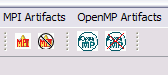

The 1.1 release of PTP gives some new functionality, some bug fixes, and some increased scalability to continue to enhance development and debug capabilities for parallel projects.
Major Features |
|
| Parallel Language Development Tools (PLDT) | The Parallel Language Development Tools (PLDT) now replaces and generalizes the MPI Language Tools framework. This will allow other programming models and parallel languages to use the static analysis features. |
| |
|
| OpenMP Support | Static analysis of OpenMP codes has been added to PLDT. This
provides similar functionality to the MPI support, but includes additional
support for detecting certain OpenMP common problems, #pragma regions, and
some simple conconcurrency analysis.
 |
| |
|
| Debugger Scalability | The debugger has been enhanced to improve
scalability on very large parallel machines. It is has been tested on a 1000
process job.
Zoom in / Zoom out on process icons allows more processes to be
displayed in the Machines view of the Parallel Debug Perspective;
a similar zoom in/out is available in the Parallel Runtime Perspective's views.
Similar zooming is available in the Machines view of the Runtime Perspective.
|
| |
|
| Debugger UI Features and Performance | Improvements have been made to how
variables are fetched and displayed in the UI in order to improve
performance.
If you open the PTP Variable View (Window -> Show View -> Other)
you can add a variable.
The following PTP Variable Dialog allows you to select a variable or expression,
and a process set (use Root for all processes) for which to create the variable to watch for each process.
Then when you mouse over a process icon in the
Parallel Debug view, it will show the value of the variable in the tooltip.
|
| |
|
| MPICH2 Runtime | Support for the MPICH2 runtime has been added. This allows programs compiled with the MPICH2 runtime to be launched using PTP. Debugging is not supported yet. |
| |
|
| Build improvements | PTP supports a large range of machine architectures, operating systems and parallel runtime systems. In 1.1, dynamically linked executables have been deprecated, and build scripts have been improved so this only requires one command for PTP installation. |
| |
|
| PTP 1.1 Release Notes | Detailed PTP 1.1 release notes are available at http://www.eclipse.org/ptp/docs/releases/release-1.1.php |
| |
|